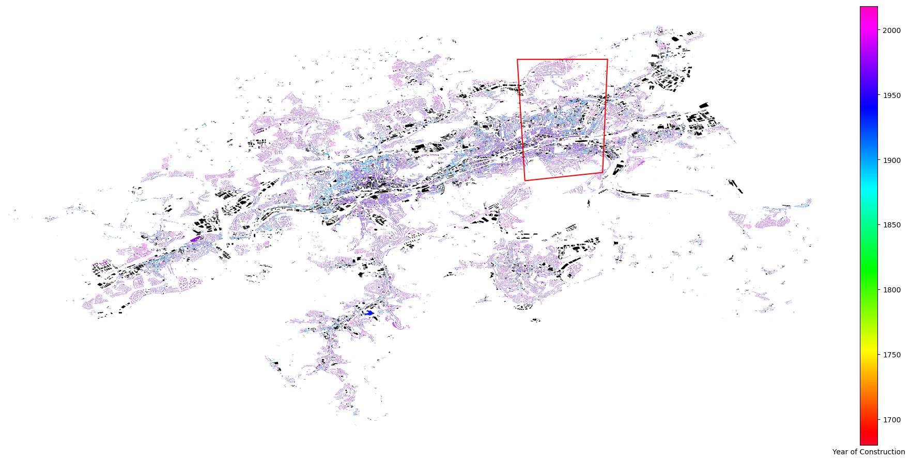

Next: Results Up: Interactive Urban Building Energy Previous: Energy simulation
The study area is situated in the German city of Wuppertal. The web-interface of UBE-FMI is called Wuppertal WorldWind Environmental Monitor (WupperWWEM) [31]. The geodata portal of the German federal state North Rhine-Westphalia offers access to LiDAR data with a resolution of 4-10 points/ [19] for every municipality. In addition to LiDAR data, a comprehensive data set on the year of construction for residential buildings is an essential requirement. According to the knowledge of the author, the City of Wuppertal is the sole provider in Germany of the year of construction for every residential and non-residential building [59]. The spatial distribution of buildings can be seen in Figure 5. The year of construction of residential buildings is indicated according to color, while non-residential buildings are black.
|  |
In the study area, there are over 5700 residential buildings. Residential buildings with mixed usages (e.g. retail shops, doctor's surgery) were identified by the tags in OSM and excluded. Following the procedure described in Section 2.2, the segmentation of the building types according to the TABULA building typology is summarized in Figure 6. The parameters characterising a building energy model are the U-values of the building surfaces and the energy expenditure coefficients of the heat generators for space heating and hot water. The 41 building types have each 8 versions, which depends on the state of refurbishment and heating system, and each version has 8 parameters. The authors kindly refer to the project website of TABULA building typology [1] to find the exact parameter values because the corresponding number of parameter values are impractical to display. According to Figure 6, Wuppertal features dense built-up areas and less urban sprawl. The housing sector mainly consists of multi-family buildings, but few buildings over 6 floors, i.e., apartment blocks. The majority of residential buildings was constructed before 1968.
UBE-FMI requires additional assumptions to complete the modelling. The number of occupants in a building was inferred from the average living area per person in Wuppertal of 41 [60]. The progress of refurbishment and whether the cellar and roof are conditioned were randomly assigned following the detailed statistics of the German housing stock [38]. The assignment of the energy carrier for each building followed the same procedure with values from the local distribution in 2010 [51]. The definition of the state of refurbishment refers to the description in TABULA building typology. In this study, only the existing state and usual refurbishment were considered. Table 1 summarizes the details of the simulation on which the web-interface rests.
Besides the simulation for the web-interface, another set of simulations was needed to indicate the appropriateness of the building modelling concept and to discover discrepancies. Unfortunately, the attempts to find time-series on energy consumption remained futile and poses a constant challenge in urban energy modelling. The reasons range from privacy issues for household data to competition regulation for district-wise measured data. Consequently, the results of the simulations are compared to reference studies. This approach was inspired by a previous study in UBEM [11]. Simulated annual energy use intensities (EUI) were compared with reference studies (Fisch et al. 2012 [15], Schröder et al. 2014 [57] and Loga et al. 2017 [39]). Four simulation set-ups with different states of refurbishment and energy carriers were constructed and simulated: existing state with oil/gas heating; existing state with district heating; usual refurbishment with oil/gas heating; usual refurbishment with district heating. Table 2 gives an overview of the conditions for each set-up.
|
The set-ups in Table 2 were constructed with the intention to achieve comparable conditions with the reference studies. These studies gathered their data from companies issuing energy performance certificates (EPC). The certification procedure is stipulated in the German Energy Saving Ordinance (EnEV) [7]. Both studies used a sizeable data set on buildings. Schröder et al. 2014 separated the results for space heating and hot water. Since Schröder et al. 2014 only distinguished between old and modern buildings in their existing state but not refurbished buildings, it was not considered in the comparison with the set-up concerning usual refurbishment. The study of Fisch et al. 2012 differs in that it contains a class of refurbishment compromised of buildings built after 1995 and completely refurbished buildings. The authors saw it necessary to convert the values of their original data set from higher heating value (HHV) to lower heating value (HHV) by multiplying with 0.9. The results were hence back-converted to HHV for comparison. The study of Loga et al. 2017 [39] provides an harmonized table for buildings in their existing state of both studies, thereby offering a broader data set to compare with. Details of the reference studies can be seen in Table 3. Unfortunately, none of the studies provided a detailed analysis of parameter values concerning refurbishment. For that reason, the state of refurbishment in this study refers to the definition of usual refurbishment in TABULA building typology.
| ||||||||||||||||||||||||||||||||||||||||||||||||||||||||||||||||||||||||||||||||
| ||||||||||||||||||||||||||||||||||||||||||||||||||||||||
Maikel Issermann